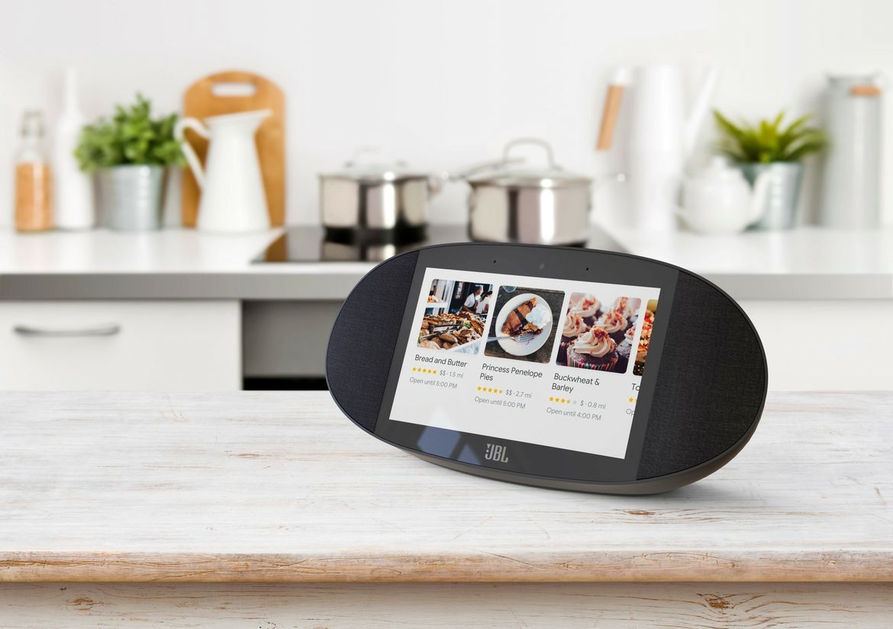

Smart speakers have been a huge hit. With hands-free control of everything from door locks to smart lighting, the ability to set timers and alarms, make phone calls and so much more, they are truly personal digital assistants.
The next major advancement in this technology has been to add screens to integrate video into these already smart helpers. The JBL Link View is one of the newest and potentially one of the best. With a huge viewing screen and the smarts of the Google Assistant, it’s sure to be able to integrate itself into your home easily and become invaluable.
What is JBL Link View?
The JBL Link view is a smart speaker that’s loaded with features. The 8″ colour touchscreen is flanked by two speakers all configured in an oval design. The two front-facing speakers are 10 watts each, plus there’s also a rear passive radiator, so expect the Link View to play nicely with bass-heavy music.
What can JBL Link View do?
The JBL Link view is hugely versatile. It executes tasks using just your voice by saying, “Hey Google…” or you can use it with the responsive touch screen. It can:
- play music
- play YouTube videos
- control smart home devices, like lights, thermostats, door locks, appliances
- set alarms, timers
- answer questions, do math
- make video calls
- cast TV shows and videos to the screen with built in Google Chromecast
- wireless Bluetooth streaming
JBL Link View: Power of Google Assistant
Thanks to the power of the ultra smart Google Assistant, the JBL Link View will give you a lot more help, answers and information, and you can expect a lot less, “Sorry, I didn’t get that,” like some other digital assistants.
Smart features built in
This smart video speaker has a lot of great features. The viewing screen is much, much bigger than the Amazon Echo Spot for example, and it’s got superb audio chops with those two 10 W speakers that put Spot’s 2 watt speaker to shame.
Camera plus privacy option
A 5 megapixel front-facing camera lets you dive into video calling, so you can stay close and connected to family and friends.
The addition of a privacy switch that enables users to securely, obviously, and easily close off the web camera will satisfy any privacy concerns.
Splash proof design makes it great for kitchen, bath
The JBL Link View has a splash-proof case, so it’s a great companion when you’re following a recipe or tutorial, and also an ideal kitchen or bathroom companion. Compatible with both Android and iOS plus Apple HomeKit and Nest, you can easily add this speaker to your network, no matter which systems you have running at home. Of course this device is also a smart home master, able to control everything from your lights, to locks, temperature, appliances and so much more, just by asking the Google Assistant that’s built in.
The JBL Link View is the ultimate smart home companion. Find it here or in your nearest store.